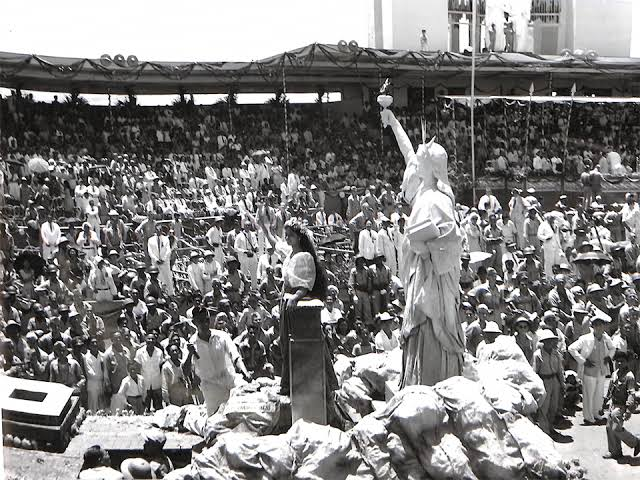

Introduction
Ever wondered how taxes in the Philippines got their start? Let’s take a trip back to the American colonial era, a time when big changes were happening. Not just in who was in charge, but also in how money worked for the country. This article is your guide to understanding how taxes shaped up during this time and why it still matters today.
Picture this: late 1800s to mid-1900s, the Philippines under American rule. This wasn’t just a change in leadership; it was like a reboot for the country’s financial system. Taxes, those tricky things we pay, were getting a makeover.
In this article, we’re digging into the past to see how taxes went from old to new. New rules, new ways of doing things—all happening when the Philippines was finding its feet as a nation. We’ll explore how the Americans and Filipinos worked together (or didn’t) in this tax tango and how those moves are still felt in today’s money matters.
What benefits the Philippines derived from American taxes:
In August 1904, the Bureau of Internal Revenue (BIR) was officially established in the Philippines under the direction of Henry Ide, then the Secretary of War. The inaugural Commissioner of the BIR was John S. Hord.
The organizational structure of the early BIR comprised several key positions, reflecting the nascent stages of tax administration in the Philippines:
- Collector/Commissioner: This position held the highest authority in the bureau, overseeing the overall management and execution of tax collection.
- Vice-Collector: Serving in a deputy or assistant capacity, the Vice-Collector likely played a crucial role in supporting the Commissioner and managing day-to-day operations.
- Chief Clerk: Responsible for administrative tasks, the Chief Clerk ensured the smooth functioning of the bureau by handling organizational matters.
- Law Clerk: Given the legal intricacies of taxation, the Law Clerk contributed expertise in interpreting and applying tax laws.
- Records Clerk: Essential for maintaining accurate and organized records, this role played a crucial part in documenting tax-related information.
- 3 Division Chiefs: These leaders oversaw specific divisions within the BIR, likely focusing on distinct aspects of tax administration to streamline operations.
At its inception, the BIR consisted of 69 employees, symbolizing the initial workforce dedicated to establishing and implementing the tax system under American colonial rule. This organizational framework laid the groundwork for the subsequent evolution of tax administration in the Philippines.
Leadership Changes in BIR
Following John S. Hord’s incumbency, the Bureau of Internal Revenue (BIR) in the Philippines underwent a series of leadership changes with the appointment of three American collectors. Here’s an explanation of each collector’s tenure:
- Ellis Cromwell (1909–1912): Ellis Cromwell assumed the role of Collector after John S. Hord. During his tenure, efforts were made to refine and improve tax administration in the Philippines. Cromwell played a pivotal role in shaping tax policies and procedures during this period.
- William T. Holting (1912–1914): William T. Holting succeeded Ellis Cromwell as Collector. His term witnessed further developments in tax collection and administration. Holting likely grappled with the challenges and responsibilities of overseeing the BIR during a dynamic period in Philippine history.
- James J. Rafferty (1914–1918): James J. Rafferty took over the position of Collector following Holting. His tenure coincided with the outbreak of World War I, and this period likely presented unique challenges for tax administration in the Philippines. Rafferty’s leadership would have been instrumental in navigating the impact of global events on local taxation.
Reorganization and Filipinization
These changes in leadership were significant for the BIR, influencing the trajectory of tax policies and administration in the Philippines during the American colonial period. The appointments were made by the Governor-General with the approval of the Philippine Commission and the U.S. President, reflecting the colonial governance structure in place at the time.
The first reorganization of the Bureau of Internal Revenue (BIR) on January 1, 1913, under the leadership of William T. Holting, introduced significant structural changes. The reorganization resulted in the establishment of eight distinct divisions within the BIR, each with specific functions:
- Accounting Division: Responsible for managing financial records, budgeting, and other accounting-related tasks to ensure accurate financial management within the bureau.
- Cash Division: Handled the receipt and disbursement of funds, playing a crucial role in the financial transactions and liquidity management of the BIR.
- Clerical Division: Focused on general administrative and clerical tasks, ensuring the smooth day-to-day operation of the bureau through organizational support.
- Inspection Division: Involved in the examination and scrutiny of tax-related documents and processes to ensure compliance with tax laws and regulations.
- Law Division: Addressed legal matters related to taxation, providing expertise in interpreting and applying tax laws, and likely playing a role in legal proceedings related to taxation.
- Real Estate Division: Managed issues related to real estate taxation, including the assessment and collection of taxes on properties.
- License Division: Oversaw licensing matters, including the issuance and regulation of licenses, ensuring that businesses and individuals complied with licensing requirements.
- Records Division: Responsible for the systematic organization and maintenance of records, playing a crucial role in archival and retrieval of information within the Bureau.
This divisional structure aimed to enhance the efficiency and specialization of the BIR, allowing for a more systematic and organized approach to tax administration. Each division had a specific role in the overall functioning of the bureau, contributing to the broader goal of effective tax collection and administration in the Philippines.
Transition to Filipino Collectors
During the American taxation era in the Philippines, the leadership of the Bureau of Internal Revenue (BIR) went through a transition from American collectors to Filipino collectors, reflecting the Filipinization policy implemented by U.S. President McKinley. Here’s a clearer explanation:
- Wenceslao Trinidad (1918–1922): Wenceslao Trinidad was appointed as the first Filipino Collector of the BIR in 1918. His tenure marked a significant milestone as he became the first Filipino to hold this position. Trinidad likely faced the challenges of managing the bureau and shaping tax policies during this early period of Filipino involvement in tax administration.
- Juan Posadas, Jr. (1922–1934): Following Trinidad, Juan Posadas, Jr. assumed the role of Collector. His leadership spanned a considerable period, and during his term, he likely played a crucial role in further institutionalizing the BIR and adapting tax policies to the evolving needs of the Philippines.
- Alfredo Yatao (1934–1938): Alfredo Yatao succeeded Posadas as Collector. His tenure coincided with a dynamic period in Philippine history, marked by economic changes and political developments. Yatao would have played a key role in navigating the challenges and opportunities related to taxation during this period.
The shift from American to Filipino collectors was part of the broader policy of Filipinization, reflecting the desire to involve Filipinos in key administrative roles. This transition was a significant step toward greater local autonomy and participation in the governance of the Philippines.
Reorganization in May 1921
In May 1921, the Bureau of Internal Revenue (BIR) underwent a reorganization, resulting in the consolidation of its structure into five key divisions. Here’s a clearer explanation of each division:
- Administrative Division: This division focused on the general administration and coordination of activities within the BIR. It likely handled organizational matters, personnel management, and other administrative functions to ensure the smooth operation of the bureau.
- Law Division: Responsible for addressing legal aspects of taxation, the Law Division played a crucial role in interpreting and applying tax laws. It might have been involved in legal proceedings related to taxation and provided legal counsel to the bureau.
- Accounting Division: Tasked with managing financial records, budgeting, and other accounting-related functions, the Accounting Division played a central role in maintaining accurate financial information within the BIR.
- Income Tax Division:
- Income Tax Division: This division specifically focused on income tax matters. It likely handled the assessment, collection, and enforcement of income taxes, adapting to any changes in income tax laws or regulations.
- Inspection Division: Responsible for the examination and scrutiny of tax-related documents and processes, the Inspection Division ensured compliance with tax laws and regulations. It likely conducted audits and inspections to verify the accuracy of tax reporting.
This streamlined structure aimed to enhance efficiency and specialization within the BIR, with each division having a specific role in the overall framework of tax administration. The reorganization reflected an effort to adapt to the evolving needs of tax collection and administration during this period.
The American taxation era in the Philippines, which spanned from the late 19th century until the country gained independence in 1946, brought about several contributions and changes to the Philippine tax system.
Conclusion
The Internal Revenue Law of 1904
The Internal Revenue Law of 1904 outlined 10 major sources of revenue:
- Licensed taxes on alcoholic beverages and tobacco: Taxes imposed on businesses involved in the production and sale of alcohol and tobacco.
- Excise taxes on alcoholic beverages and tobacco products: Taxes levied on specific goods, such as alcohol and tobacco, at the manufacturing or importation stage.
- Taxes on banks and bankers: Levies imposed on financial institutions and individuals engaged in banking activities.
- Document stamp taxes: Taxes applied to legal or financial documents, often indicated by affixing a stamp to the document.
- The cedula: A tax on residents, typically collected through the issuance of identification cards.
(In 1907, the Cedula Act replaced the previous system, making the cedula an annual requirement for everyone in the Philippines. The act aimed to create a fairer tax system by introducing a percentage-based approach, ensuring taxes aligned with individuals' capacity to pay.)
- Taxes on insurance and insurance companies: Levies on insurance transactions and the business activities of insurance companies.
- Taxes on forest products: Revenue generated from the extraction or use of forest resources.
- Mining concessions: Taxes related to the granting of rights for mining activities.
- Taxes on business manufacturing: Levies imposed on businesses involved in manufacturing goods.
- Occupational licenses: Fees charged for the right to engage in a particular profession or occupation.
Other Major Events in 1914-1932
- In 1914, the introduction of income tax marked a significant development in American taxation. Individuals began to be taxed based on their income, adding a new dimension to the revenue system.
- In 1919, an inheritance tax was established, signifying another layer of taxation. This tax targeted the transfer of wealth from one generation to another, contributing to government revenue.
- The year 1932 witnessed the establishment of the National Lottery, providing a unique source of income for the government. This form of taxation involved revenue generated from lottery activities.
These developments reflect the evolving landscape of American taxation, incorporating income tax, inheritance tax, and a novel approach through the National Lottery to diversify sources of government revenue.
References
- Studocu. (n.d.). Taxation under the Americans - TAXATIONUNDERTHEAMERICANS The Americans who acquired the - Studocu. https://www.studocu.com/ph/document/agusan-colleges-inc/business/taxation-under-the-americans/35883720
- About BIR: History. (n.d.). https://spotlightonbir.tripod.com/html/html/about_history.html